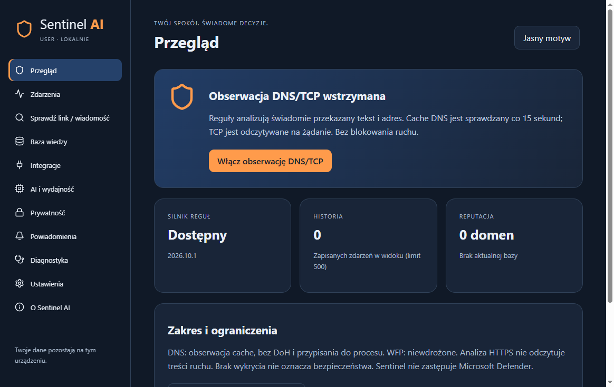

Sprawdź wiadomość
Reguły rozpoznają presję czasu, prośby o dane, kody BLIK, podejrzane płatności i instrukcje uruchamiania plików. Analiza nie odwiedza adresów.
Sentinel AI pomaga ocenić podejrzaną wiadomość lub adres. Łączy lokalne reguły z listą ostrzeżeń CERT Polska i obserwacją cache DNS Windows.
Wersja rozwojowa. Wykrywanie i ostrzeganie, bez gwarancji blokowania ruchu.

Reguły rozpoznają presję czasu, prośby o dane, kody BLIK, podejrzane płatności i instrukcje uruchamiania plików. Analiza nie odwiedza adresów.

Jawnie pobierana lista CERT Polska. Lokalna baza SQLite, data aktualizacji, atomowa wymiana i powrót do poprzedniej wersji. Dopasowania dokładnej domeny.

Cache DNS jest próbkowany po włączeniu obserwacji, a procesy co około 1 sekundę. Opcjonalny monitoring TCP/UDP (domyślnie wyłączony) porównuje migawki Windows co około 1 sekundę: zapisuje nowe zewnętrzne połączenia TCP w stanach Established/SynSent i pojawienie się lokalnych punktów UDP, wyłącznie jako metadane. Krótkie połączenia mogą zostać pominięte; punkt UDP nie potwierdza wysłania datagramu ani zdalnego celu. Bez przechwytywania treści TLS, sterownika ani zmiany ustawień sieci.
Ograniczenia analizy URL: dla reguł `2026.10.6` niezależny test PhishVN v3.1.0 wykazał 0 wykryć na 487 oznaczonych phishingowych adresach w części testowej gold/silver (próg Moderate). To wynik konkretnego zbioru, nie miara wszystkich zagrożeń. Brak alarmu nie potwierdza bezpieczeństwa; Sentinel nie blokuje stron i nie zastępuje Defendera.
Cache DNS nie pokazuje pełnych URL, procesów ani całego ruchu. DoH, VPN, połączenia po IP i krótkotrwałe wpisy mogą pozostać niewidoczne. WFP nie jest wdrożone. Narzędzie nie zastępuje Defendera.

Analizujesz tylko świadomie przekazany tekst. Do historii trafiają oceny i reguły, bez pełnego URL i surowej wiadomości. Wykrycia DNS mogą zawierać domenę, która wywołała ostrzeżenie. Baza nie jest szyfrowana; retencję możesz ustawić i usunąć historię.
Przycisk aktualizacji pobiera listę z hole.cert.pl. Serwer źródłowy widzi standardowe metadane połączenia, w tym IP; nie otrzymuje Twoich analizowanych wiadomości ani historii. Brak telemetrii aplikacji i chmurowej analizy AI. GitHub Pages, jako hosting tej strony, może przetwarzać standardowe logi dostępu zgodnie ze swoją polityką.

Nie. Reguły i lista domen mają ograniczony zakres, a nowy atak może nie zostać rozpoznany.
Nie. Reguły i reputacja działają bez modelu. Opcjonalna analiza przez Ollama działa po wcześniejszym zainstalowaniu modelu i włączeniu tej funkcji; Sentinel łączy się wyłącznie z lokalnym adresem loopback i nie pobiera modelu samodzielnie.
Do analizy pełnego adresu — tak. Rozszerzenie i host Native Messaging wymagają osobnej konfiguracji. Przepływ przetestowano w odizolowanych profilach Chrome i Edge; rozszerzenie nie jest dystrybuowane przez sklep. Obserwacja cache DNS działa niezależnie.
Reguły działają offline. Reputacja działa na ostatniej kopii przez 48 godzin, po czym jest oznaczana jako wygasła.
Instalator ma własny kreator, sprawdza integralność pakietu, instaluje program dla bieżącego użytkownika i zachowuje dane przy odinstalowaniu. To nadal wersja prerelease: po publikacji wymagany jest test instalacji, aktualizacji i usuwania na czystym Windows. Sentinel AI nie zastępuje Microsoft Defender.
SHA-256: dostępny w pliku kontrolnym obok instalatora na stronie wydania.
Pobierz instalator Windows (0.15.38)Suma kontrolna SHA-256 · Informacje o wydaniu · Kod i dokumentacja